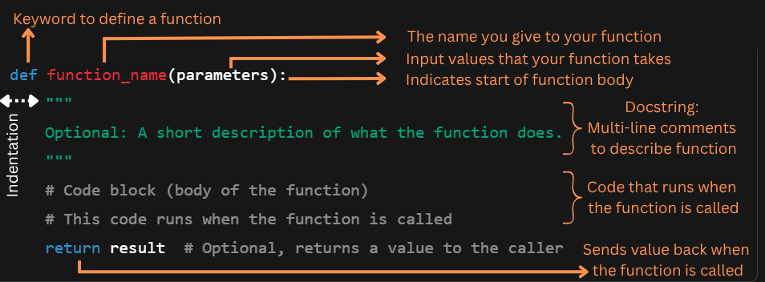

Module 6: Functions#
Objectives:
By the end of this module, you will be able to:
Understand the purpose and structure of functions in Python, including how to define and call them.
Use function parameters and arguments effectively.
Differentiate between local and global variables.
Recognize and apply advanced function concepts, such as recursion, anonymous functions (lambda), and built-in functional tools like map(), filter(), and zip().
outline#
defining a function
calling a function
arguments and parameters
number of arguments
docstrings
default parameter values
return values and functions with no return, just print for example
In the previous sections, we’ve talked about several built-in functions like print() and input(), as well as functions from installed packages like numpy’s array() and pandas’ read_csv().
Now we’ll talk about how you can write your own functions.
Why write a function?#
Reuse code easily As you start coding and analyzing data in Python, you’ll soon realize that some code snippets are repeated and can be reused. Instead of copying and pasting the same code again and again, you write it once as a function and use it whenever you need. This saves time and effort!
Make your code cleaner and shorter Functions help break big problems into smaller, manageable pieces. This makes your code easier to read and understand. We often talk about avoiding ‘spaghetti code’. Just as it sounds, this describes code that is unclear, a big tangled mess that’s tough to read, understand, and work with,—kind of like a bowl of spaghetti all mixed up.
Avoid mistakes When you reuse the same function, you only need to test and fix the code once. This reduces errors compared to copying code multiple times.
Organize your work Functions let you give a name to a block of code, which describes what it does. This helps others (and future you!) understand your program faster.
Building Blocks of a Function#
So what are the building blocks of a function? What elements do we need for Python to understand that we’re defining a function?
Let’s take a look at the syntax needed:
As you can say, a function requires parameters to define the type and number of values that it can accept (source: https://www.geeksforgeeks.org/difference-between-parameters-and-arguments/). These parameters are placeholders for the actual data you want to pass when you call the function. If your function were a vending machine, then the parameters are the buttons you press to choose what comes out!
Notice that you only need to define a function once, then you can use (call) it as many times as you like.
Let’s use the Kaggle stroke data to write our first function.
def count_stroke_patients(df):
"""
Count how many patients in the dataset had a stroke.
"""
stroke_count = df['stroke'].sum()
return stroke_count
Function with default parameter/default argument
def check_high_glucose(df, threshold=125):
"""
Add a column 'glucose_status' labeling patients as 'high' or 'normal'
based on avg_glucose_level threshold.
"""
def glucose_level(glucose):
if glucose > threshold:
return 'high'
else:
return 'normal'
df['glucose_status'] = df['avg_glucose_level'].apply(glucose_level)
return df
Function which returns 2 values
def count_adults_and_minors(df):
"""
Count how many patients are adults (age >= 18) and minors (age < 18).
Parameters:
df (pd.DataFrame): The stroke dataset with an 'age' column.
Returns:
tuple: (number_of_adults, number_of_minors)
"""
adults = 0
minors = 0
for age in df['age']:
if age >= 18:
adults += 1
else:
minors += 1
return adults, minors
Function with no return
def plot_histogram(df, column, bins=30):
"""
Plot a normalized histogram for any numeric column in the DataFrame.
Parameters:
df (pd.DataFrame): The dataset.
column (str): The name of the numeric column to plot.
bins (int): Number of bins for the histogram (default 30).
"""
plt.figure(figsize=(6, 4))
plt.hist(df[column].dropna(), bins=bins, alpha=0.6, edgecolor='black', density=True)
plt.xlabel(column, fontsize=14)
plt.ylabel('Probability density', fontsize=14)
plt.xticks(fontsize=12)
plt.yticks(fontsize=12)
plt.title(f'Normalized Histogram of {column}', fontsize=18)
plt.show()